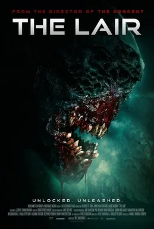

The genetics
The monsters are human-alien hybrids made in a secret Soviet programme. According to the film's backstory, the Soviet Union found a crashed alien spacecraft in Afghanistan, used the invasion of 1979 as cover, and experimented on abducted local villagers to combine human and alien DNA; the results are clawed, thick-skinned creatures with human organs that can read minds through tentacles, kept in stasis in an abandoned bunker. The scientists are never seen, only their creations, and the revelation that the monsters were once the missing villagers, including Kabir's father, makes the programme a war crime against civilians. The genetic experiments are the source of the horror, and the ending, in which an American black-ops team searches for a specimen, suggests that a new power wants to exploit the same work. The film is a monster movie in the tradition of Alien, and merging human and alien DNA is pure fantasy.
How genetics is portrayed
- Overall portrayal of genetics
- negative Genetic hybridisation is a military atrocity that produces monsters, and the ending shows American black ops trying to exploit the same work.
- Outcome of the genetic intervention
- negative The hybrids are the villagers themselves, transformed into monsters that kill insurgents, soldiers and most of the team.
- Soviet military programme
- villain Aim: military (negative). Using alien DNA from a crashed spacecraft, the Soviets turned abducted Afghan villagers into human-alien hybrids in a secret bunker, with the invasion as cover; the film presents it as a dark secret whose creatures still kill decades later. The aim is not spelled out beyond its military setting.
The story
In this action-horror film by Neil Marshall, set in 2017, RAF pilot Kate Sinclair is shot down over Afghanistan and, fleeing insurgents, hides in an abandoned Soviet bunker, where clawed humanoid creatures are released from stasis and kill her pursuers. Rescued by American soldiers, she reaches a small outpost, but that night the creatures attack, killing soldiers and taking their bodies. A local man, Kabir, recalls that a star fell from the sky before the Soviet invasion of 1979 and that villagers, including his father, disappeared over the following years. A dissection of a dead creature reveals human organs, and Major Finch learns from his superiors that the Soviets found a crashed alien spacecraft and experimented with combining human and alien DNA. The team goes back to destroy the bunker, and Kabir finds his father among the creatures. Sinclair, Hook and Wilks escape just before a bunker-buster bomb destroys the site, and an American black-ops team arrives looking for a specimen.